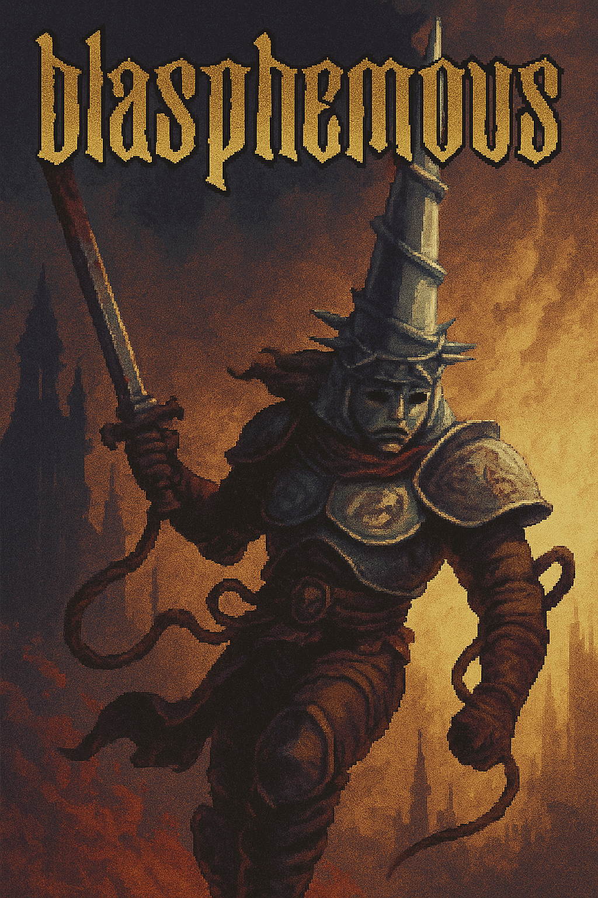

Blasphemous
Blasphemous é um jogo de ação e aventura com elementos de Metroidvania, ambientado no mundo sombrio e cruel de Cvstodia, onde o "Milagre", uma força divina, manifesta-se de maneiras tanto bênçãos quanto maldições. O jogador assume o papel do Penitente, o único sobrevivente de um massacre, que desperta em um ciclo de morte e renascimento, e deve embarcar em uma jornada para libertar o mundo desse terrível destino.